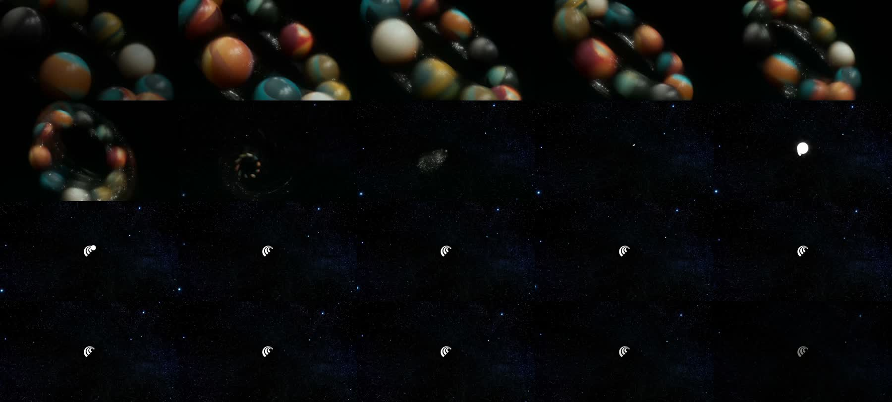
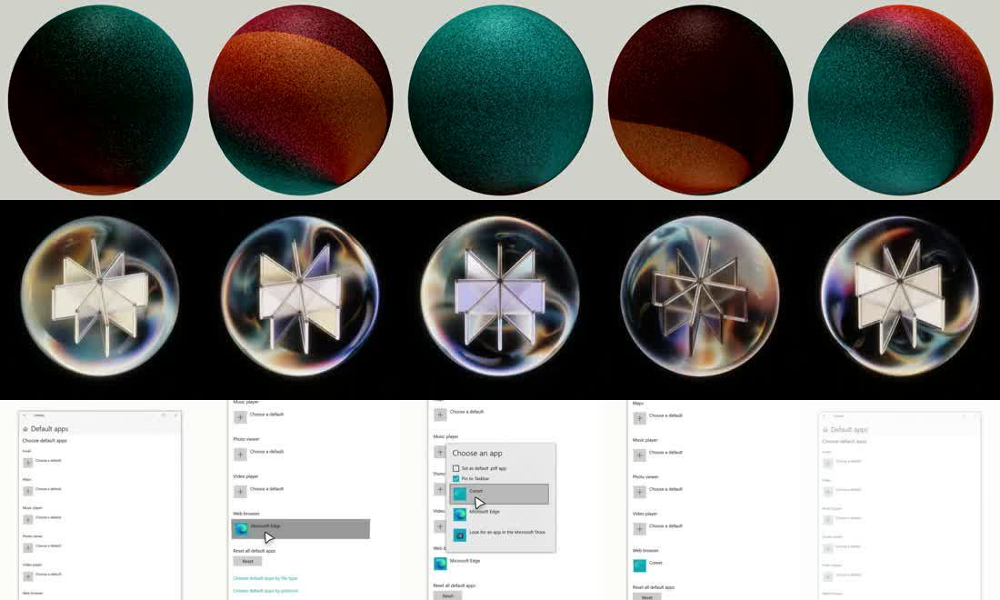

Comet 有两套设计,别把它们混为一谈
几乎所有“Comet 好炫”的印象,来自其一。真正要复刻进产品的“克制美学”,是其二。它们的字体、动机、技术栈都不同。
官网与发布影片(Studio Freight 操刀)。所有“大片感”都在这里。
- 宇宙叙事:太空到地球的滚动旅程,AI 生成影片(Midjourney 到 AE),非 CSS mesh
- 轨道抛物线运动路径;元素沿椭圆轨道而非直线移动
- 可变字重 hover 膨胀——衬线体像“活的材料”被拉伸
- 技术:Lenis(平滑滚动)+ GSAP;字体 PP Editorial New(衬线)
浏览器本体、首启引导、侧栏。刻意克制、近乎无彩,评测常拿它比 Brave/Edge。
- 首启引导是唯一的“炫”窗口:影片 + Lottie 行星 + 环境音 + 声效
- 默认安静:中性灰、圆角、柔和图标,“sleek 但不冰冷”
- 助手侧栏内嵌(非浮窗);AI 接管标签页时蓝色蒙层提示
- 技术:Chromium WebUI;引导为 React SPA;字体 FK Grotesk
要复刻的目标 = A 的运动语言 × B 的产品克制
把营销层的“宇宙 / 行星 / 轨道 / 影片质感”这套母题,以产品层的分寸感注入 UI——这正是首启引导做的事,也是本解构的重点。
暖纸白、深青黑,和一整套“行星光谱”
点任意色块复制 HEX。品牌青经源码确认为 #20808D / #1FB8CD(--perplexity-brand-highlight-rgb),终结了公开资料 #20808D vs #21808D 的分歧。
基底 & 品牌
行星光谱 —— 头像与强调的来源
三颗行星的真实渐变配方
9-cookie · 绿
background:
radial-gradient(circle at 34% 30%,
#d4e9d7, #6acc97 46%, #00af57);
/* rim */ #78c9ff→#bbe4ffslanted · 蓝
background:
radial-gradient(circle at 36% 30%,
#b3cbf7, #3186ff 55%, #2e69cd);
/* overlay */ #a7a7ffoval · 金
background:
radial-gradient(circle at 34% 30%,
#fbebb8, #fec700 52%, #e79d2d);
/* rim */ #ffb5e8→#8f6a84一套五面孔的字体家族
应用包内实测内置 FKGroteskNeue-Medium/Regular 与 FKGrotesk-Regular 三个 ttf 加多个 woff 网络字重。均为商业字体(见 NOTICE)。本页正文以 Inter 临摹其气质,标题用高对比衬线呼应营销层的 PP Editorial New。
PP Editorial New(Pangram Pangram)把科幻感“软化并升华”。本页用 Fraunces / 思源宋体作高对比衬线替身,是对这一气质的致敬,非原字。
Florian Karsten 出品。机械感 + 暖度,Helvetica/Univers 血统。Neue 为正文切,“更少花饰、适合大段文字”。
实锤:头像上的编号徽标 .b-profile-avatar__number 就用它。本页所有等宽处即此角色(以 JetBrains Mono 临摹)。
大标题字重
“软化并升华”科幻感
代码 / 技术片段
“炫”的秘密:电影级慢层叠敏捷微交互
Comet 把两种时间尺度叠在一起——1300 到 1500ms 的电影级淡入营造氛围,120 到 400ms 的微交互保证手感。点任一卡片重放,曲线与时长为其真实取值。
时长阶梯(真实 token)
母题一:呼吸行星(Lottie)
8 个 Lottie(60fps,5 到 8s 循环,图层名含 breathing)——三形态(9-cookie / slanted / oval)× 明暗,渐变缓慢流动“呼吸”。上方 hero 的三颗球即用真实渐变以 CSS @keyframes breathe 复现。
母题二:参数化弹跳
头像宽度过渡用 cubic-bezier(0.64, var(--bounce-coefficient,1.75), 0.61, 0.77)——把回弹强度做成 CSS 变量,一个变量统一全局“Q 弹程度”。
一个会放电影、还带声音的 React 页面
引导壳 chrome://perplexity-onboarding 仅 932B,预加载 3 段 MP4 加 1 段环境音,挂一个 React #root。流程:用户名 → 行星头像 → 主题(浅 / 深 / 跟随)。
22315.css:rotate(-20deg) 加编号 / 名称 slide-in 300ms(名称延迟 100ms)window.chromeOnboarding JS 桥(原生↔页面通信;埋点 Indigo.Onboarding.*,内部代号 Indigo)从应用包解出的原始影片,逐帧看
非屏幕录制——直接从 resources.pak 解出 MP4 后 ffmpeg 抽帧。这比录屏更干净、可无限放大。


把上面的数值直接接进你的产品
1 · 落地 token(复制即用)
:root{
--paper:#FBFAF4; --ink:#13343b;
--teal:#20808D; --cyan:#1FB8CD;
--func:cubic-bezier(.19,1,.22,1);
--dur:400ms; --minor:120ms;
--bounce:1.75; /* 可调回弹 */
--radius:8px; --pill:42px;
}2 · 呼吸行星(纯 CSS,零依赖)
.orb{width:96px;aspect-ratio:1;border-radius:50%;
background:radial-gradient(circle at 34% 30%,
#d4e9d7,#6acc97 46%,#00af57);
animation:breathe 6s var(--func) infinite alternate}
@keyframes breathe{
from{transform:scale(.96);filter:brightness(.94)}
to {transform:scale(1.04);filter:brightness(1.08)}}决策:Lottie vs 纯 CSS vs 影片
- 头像行星 → Lottie 或 CSS 渐变皆可;静态形态用 CSS 最省,复杂流动用 Lottie
- Intro 宇宙旅程 → 预渲染 MP4(24fps)。WebGL 粒子成本高且难控,官方选择影片
- 循环球体 → 方形 MP4 无缝循环(正反拼接消除接缝);30fps
- 微交互 → 纯 CSS transition,用
--func/--dur
工程要点 / 坑
- 严格 CSP:importmap 内联,资源同源;嵌入场景把媒体转 data URI
- 预加载重资源:
<link rel="preload" as="video">避免首帧卡顿 - 声音要用户手势解锁:环境音需在首次点击后
play() - 暖白不是纯白:
#FBFAF4白点偏暖、降眩光;深色端#13343b/#1a1a1a - 尊重
prefers-reduced-motion:关呼吸 / 星场动画
字体授权
FK Grotesk / FK Grotesk Neue / Berkeley Mono / PP Editorial New 均为商业字体。复刻到生产环境需自行授权;本页与临摹用开源字体(Inter / Fraunces / 思源)代替,仅作参考。从应用包解出的 ttf/woff 仅供内部研究比对。
每个数值从哪来,什么是实锤、什么是推断
- 提取方法
- 解析
Comet.app内resources.pak(Chromium GRIT v5,含 gzip/brotli),还原chrome://perplexity-onboarding的 HTML/CSS/JS、8 个 Lottie JSON、4 段 MP4、环境音与 woff 字体。色值 / 缓动 / 时长均取自这些源文件。 - 实锤(源码级)
- 全部 token、缓动曲线、时长、圆角、blur、行星渐变、字体文件、引导架构(React SPA + MP4 + Lottie + audio)、内部代号 Indigo。
- 推断 / 公开资料
- 营销层技术栈(Lenis + GSAP,Studio Freight)、宇宙叙事概念、可变字重 hover——来自公开访谈与官网观察,非源码。
一处公开资料被源码推翻
网络调研普遍称 Comet“无 Lottie 证据、产品 token 未公开”。实测相反:产品内置 Lottie 播放器与 8 个引导动画,且全部 token 可从源码提取。凡冲突处,以应用包源码为准。
可复刻资产清单
本仓内:真实 MP4 / 字体 / Lottie、逐帧关键帧、token 清单(design-tokens.css)、协作录制脚本 RECORD_INSTALL.sh。经两个对抗性审查 Agent 核查(见 事实核查.md、设计评审.md)。